6.1- Ordenadores
Dispositivos digitales¶
- Representación digital de la información.
- Electrónica analógica y digital
La electrónica es la ciencia que estudia los dispositivos, circuitos y sistemas que hacen posible el intercambio, el almacenamiento y el tratamiento de la información.
Los sistemas electrónicos son el conjunto de dispositivos que procesan la información para obtener, por ejemplo, la imagen que se muestra en la pantalla de un televisor, el sonido que emite la radio o los archivos de un ordenador. Dependiendo de su funcionalidad, se clasifican en:
- Sistemas analógicos. Utilizan señales continuas, es decir, que pueden tomar un número infinito de valores comprendidos entre dos límites. La mayoría de los fenómenos de la vida real son señales de este tipo (temperatura, peso, velocidad, etc).
- Sistemas digitales. Sus variables son discretas, de modo que solo pueden tomar ciertos valores dentro de un rango. Los ordenadores son un ejemplo de sistemas digitales porque únicamente utilizan dos estados para almacenar la
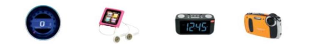
información: el cero y el uno.
Las señales analógicas son totalmente precisas, pero son muy difíciles de manipular. guardar o recuperar con exactitud. Por esta razón, se digitalizan para realizar su tratamiento y, al final del proceso, se convierten a su naturaleza analógica original. Por ejemplo, al hablar por teléfono, la voz (analógica) se digitaliza para transmitirse por las redes de telecomunicaciones (digitales) y, una vez en el teléfono del interlocutor, se transforma nuevamente en voz (analógica).
- Sistemas de numeración
Un sistema de numeración es el conjunto de reglas que permiten, con una cantidad finita de símbolos, representar un número cualquiera.
El sistema decimal o arábigo es el sistema de numeración utilizado en todo el mundo. Está formado por diez símbo1os: 0,1, 2, 3, 4, 5, 6, 7, 8 y 9.
Al tratarse de un sistema posicional, cada dígito tiene un valor que depende de la posición que ocupa. Por ejemp1o, el número 125.45 es equivalente a un polinomio de potencias de diez:
125.45 =1·102 + 2·101 + 5·10° + 4·10-1 + 5·10-2
- Sistema binario
Los ordenadores utilizan el sistema binario, formado por ceros y unos, para manipular y almacenar la información. La notación utilizada para identificar una cifra en binario es el subíndice 2. Para conocer el equivalente en decimal de un número en binario, hay que desarrollar el polinomio de potencias de base 2:
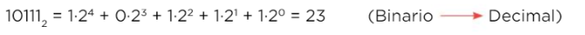
La conversión de un número decimal a binario consiste en dividir el número decimal sucesivamente por la base 2. El resultado se logra al tomar el último cociente y todos los restos en orden inverso a como han sido obtenidos.
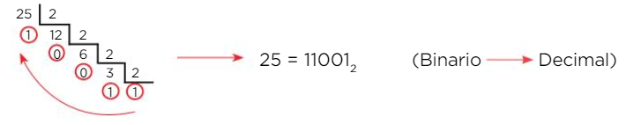
- Representación de la información
Existen distintas formas para representar la información, que abarcan desde la utilización de las señales de humo hasta
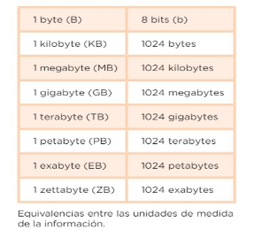
los mensajes cifrados.Los sistemas digitales están basados en transistores que adoptan dos estados diferentes: abierto o cerrado. Por esta razón, en electrónica e informática se utiliza el sistema binario que representa cada uno de los estados utilizando un bit (binary digit), cuyos valores pueden ser el 0
- el 1. Dado que un bit puede contener una cantidad de información sumamente pequeña, los ordenadores trabajan con agrupaciones de 8 bits, a las que se denomina «byte», y sus correspondientes múltiplos.
Visualiza el siguiente vídeo:
https://www.youtube.com/watch?v=BC3_ZdgfDho
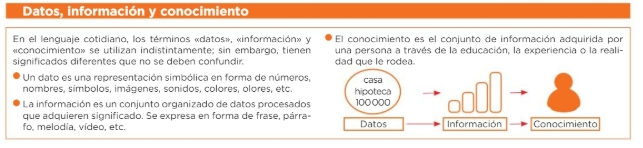
- Equipos informáticos.
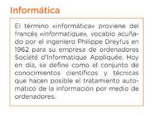
- El ordenador y sus componentes
Un ordenador es una máquina electrónica que recibe datos y los procesa para convertirlos en información. Sus componentes básicos son el hardware y el software.
El hardware es el conjunto de componentes físicos que integran el ordenador; pueden ser eléctricos, mecánicos o electromecánicos. Algunos ejemplos son el procesador, la memoria, la impresora, el disco duro y la pantalla.
El software es el conjunto de componentes lógicos que hacen posible la realización de tareas específicas en un ordenador. Está formado por el sistema operativo, los programas y los datos.
- Arquitectura principal de un ordenador
La arquitectura de un ordenador hace referencia a cómo están organizados los elementos de este. En la actualidad, los componentes más importantes son los siguientes:
- Placa base. También conocida como «place madre», es el soporte donde se conectan todos los componentes que constituyen el ordenador, ya sea de forma directa o por medio de ranuras de expansión. Uno de sus componentes más importantes es el chipset, que controla el flujo de datos entre el microprocesador, la tarjeta gráfica y el resto de dispositivos (monitor, disco duro. Etc).
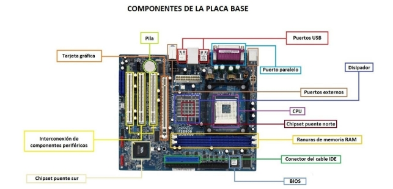
- Microprocesador o CPU (Unidad Central de Proceso). Circuito integrado formado por millones de transistores, cuya función es procesar los datos y las instrucciones que recibe de la memoria RAM (Random Access Memory).
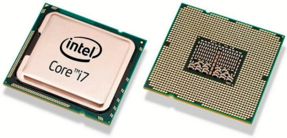
- Memoria principal RAM. Memoria que almacena temporalmente datos y programas con los que trabaja el ordenador en cada instante.
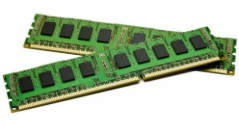
- Memoria secundaria. Soporte de almacenamiento que sirve para guardar información de forma masiva y permanente. Algunos ejemplos son los discos, las memorias USB y las cintas.
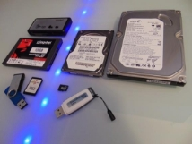
- Tarjeta gráfica o procesador gráfico. Dispositivo
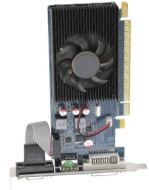
que procesa los gráficos y envía la señal de vídeo al monitor. Los procesadores gráficos incluyen su propio procesador, memoria, etc, por lo que pueden llegar a ser tan potentes como un ordenador.
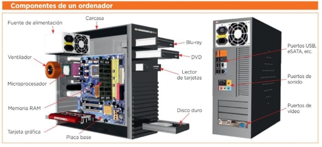
- Principales componentes de la placa base.
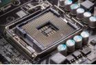 |
Zócalo (socket) para el microprocesador. En él se inserta el microprocesador. Cuando abrimos el ordenador es lo que habitualmente vemos es un ventilador con un disipador de calor de aluminio debajo. |
|---|---|
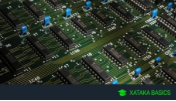 |
Chipset. Es un conjunto de chips situados sobre la placa base encargados de realizar las comunicaciones entre el microprocesador y los distintos componentes conectados a la placa base. Controla el modo de operación de la placa, por lo que determina su rendimiento y sus características. |
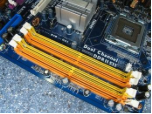 |
Ranuras (slots) para la memoria RAM. En ellas se colocan los módulos de la memoria RAM. Se distinguen de otras ranuras porque llevan unas pinzas para sujetar el módul. |
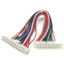 |
Conector ATX. Es el conector que une la fuente de alimentación con la alimentación con la placa base, a través de cables como el de la imagen. Es necesario para que ésta tenga la corriente suficiente para funcionar. |
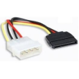 |
Conexiones IDE y SATA. Son las conexiones para las unidades de almacenamiento: el disco duro, el DVD- ROM, la grabadora de DVD. etc. Las placas pueden llevar los 2 tipos de conexión, IDE y SATA, o bien uno de ellos, dependiendo de la antigüedad del ordenador. |
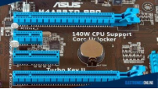 |
Ranuras de expansión. En ellas se insertan las tarjetas de expansión, como la tarjeta gráfica, la de sonido, la de red, etc. A veces, estas tarjetas están integradas en la placa y las ranuras pueden estar vacías. Hay varios tipos: PCI, AGP y PCI Express (PCI-E) |
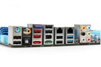 |
Conexiones externas. Son los puertos que se conectan la red (RJ45) y los dispositivos externos, como el teclado, ratón, los auriculares, memorias USB, etc. |
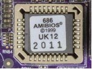 |
Chip y pila para la BIOS. El chip bios/CMOS es un chip que incorpora un programa que se encarga de dar soporte al manejo de algunos dispositivos de entrada y salida. Físicamente es de forma rectangular y su conector de muy sensible. Además, el BIOS conserva ciertos parámetros como el tipo de algunos discos duros, la fecha y hora del sistema, etc. |
- Conectores internos y puertos
Los conectores internos son todas aquellas ranuras de expansión. Para que los dispositivos conectados a una tarjeta de expansión puedan funcionar correctamente, deben realizarse dos operaciones básicas:
- Conectar la tarjeta de expansión a un zócalo (ranura de expansión) libre,
compatible con la tarjeta, de la placa base.
- Configurar la propia tarjeta: Proporcionar al sistema operativo el conjunto de instrucciones, denominado controlador o driver, necesario para que pueda
controlarla. Esta operación se realiza mediante el software proporcionado por el fabricante, aunque en algunas ocasiones el propio sistema operativo dispone del controlador adecuado.
Tipos de zócalos en los que conectar las tarjetas de expansión (dependen de la placa base):
- ISA: Es el más antiguo; es largo y está dividido en dos partes.
- PCI: Es más corto y ofrece más rapidez de transferencia; posibilita la tecnología Plug & Play, por lo que los dispositivos conectados son detectados automáticamente por el sistema operativo. Ya se dispone de variantes de estos zócalos con más prestaciones, como son la PCI-X y las PCI-Express.
- AGP: Zócalo específico para las tarjetas de vídeo, ofrece velocidades muy superiores.
- SATA: es una interfaz de transferencia de datos en serie entre la placa base y algunos dispositivos de almacenamiento, como pueden ser discos duros HDD, lectores y regrabadoras de CD/DVD/Blu-ray, unidades de estado sólido (SSD)
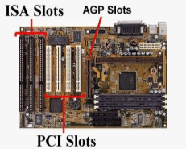
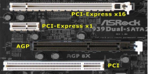
Los puertos sirven para conectar los periféricos de entrada/salida a la placa base:
- Puertos USB: Son puertos serie de gran velocidad a los que se puede conectar hasta 127 dispositivos en cadena, uno tras otro. Otra característica fundamental es que permiten conectar y desconectar dispositivos sin necesidad de apagar el ordenador. Los puertos USB han evolucionado desde el USB 1.0 o USB 1.1, USB 2, y USB 3. La diferencia principal es la tasa de transferencia de información, pasando desde los 1,5 Mbps iniciales, por los 12 Mbps de los puestos USB 1.1 hasta los 480 Mbps en los puertos USB 2.
- HDMI (High Definition Multimedia Interface): Es una interfaz digital para transferir datos multimedia de alta definición de audio y de vídeo; se ha convertido en el sustituto del euroconector. Permite conectar dispositivos como ordenadores, reproductores multimedia, televisores digitales y videoconsolas.
- Puertos de red: Se emplea para conectar dispositivos en red. Normalmente se utilizan dos tipos de redes de ordenadores:
- Las redes Ethernet, que usan el puerto RJ-45.
- Las redes de fibra óptica.
- Puerto de audio: Contiene diversos conectores JACK que se utilizan para la transmisión de sonido. Los conectores se diferencian por colores en función de su utilidad.
- Puerto Thunderbolt: Es un puerto de alta velocidad que hace uso de la tecnología óptica con capacidad para ofrecer un gran ancho de banda.
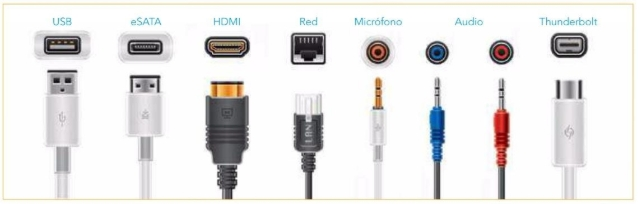
Puertos en desuso:
- Puertos IEEE1394, FireWire o i.Link: Son un nuevo estándar con una velocidad de transferencia similar a los puertos USB (4 Mb). También se pueden conectar y desconectar sin apagar el ordenador y suelen utilizarse para transferir vídeo, por ejemplo, desde una videocámara digital.
- Puertos infrarrojos (IrDA): “En desuso”. Permiten conectar dispositivos sin necesidad de hacerlo mediante ningún cable; su velocidad de transferencia es menor que la de los puertos USB y Firewire, alcanzando 4 Mbps como máximo. Estos puertos suelen utilizarse para intercambiar información con ordenadores de bolsillo, PDA, teléfonos móviles …
- Puertos serie, PS/2 y paralelo.
-
Puertos serie: Transfieren la información de forma lenta, por lo que se utilizan para conectar el ratón u otros dispositivos que no necesiten transferir mucha información a la vez. La ventaja de estos puertos es que permiten conectar dispositivos que estén alejados de la CPU.
Lo habitual es que existan dos puertos serie, que se nombran como COM1 y COM2.
-
Puertos paralelos: Permiten transferir más cantidad de información que un puerto serie (Un byte en vez de un bit), motivo por el que se suelen utilizar para conectar dispositivos con mayor transferencia de información, como, por ejemplo, las impresoras. La diferencia respecto a los puertos serie es que disponen de un número superior de canales internos destinados al bus de datos, aunque ello también genera un pequeño inconveniente: los cables de conexión no pueden ser muy largos por las interferencias que se crean entre dichos canales.
Un ordenador suele tener un solo puerto paralelo, nombrado como LPT1.
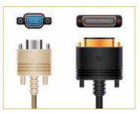
- Puertos VGA y DVI. Conectan la salida de la tarjeta gráfica al monitor.
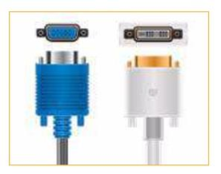
- Memorias
La memoria es un componente esencial en los ordenadores. Aunque, habitualmente, se asocia la memoria del ordenador con la memoria principal (RAM) esto no es correcto.
En un ordenador, existen varias memorias, de diferentes tipos y con distintas funciones: memoria RAM, memoria caché, memoria ROM, y además, hay que tener en cuenta que prácticamente todos los dispositivos del ordenador llevan incorporada una memoria propia: las impresoras, las tarjetas de vídeo, el propio microprocesador, el disco duro.
- RAM. Su función es tener preparadas las instrucciones y los datos para que la CPU pueda procesarlos y almacenar temporalmente el resultado de las operaciones realizadas por la CPU. Sus características principales son:
- Acceso aleatorio: la información no se distribuye en ella de forma secuencial.
- La información se puede leer y escribir
- Volátil: Su contenido se pierde al apagar el ordenador.
- ROM. Es la memoria de solo lectura. No es volátil: la información no se pierde al apagar el ordenador. Es ideal para almacenar las rutinas básicas del hardware, como el programa de arranque del ordenador (BIOS) o el chequeo de la memoria.
- CACHÉ. Es un tipo de memoria RAM, mucho más rápida que la convencional. Su función es almacenar información, pero, en este caso, la memoria caché dispondrá de las instrucciones o los datos que acaba de utilizar, o vaya a utilizar, el microprocesador. Esta memoria está situada entre el microprocesador y la memoria RAM, para agilizar la transferencia de información entre ellos.
2.5 Unidades de almacenamiento internas y externas
La CPU trabaja directamente con la memoria RAM, puesto que es con ella con la que realiza el intercambio de información: toma los datos e instrucciones para ejecutarla y deja los resultados. Puesto que esta memoria es volátil, desaparece su contenido al apagar el ordenador, es imprescindible disponer de un sistema de almacenamiento que permita guardar la información de forma permanente, y así, evitar su pérdida.
Las unidades de almacenamiento internas son los discos duros.
- Discos magnéticos ya que suelen estar dentro del ordenador.
Los discos duros están formados por un conjunto de discos apilados con un eje común; entre ellos están situadas las cabezas de lectura-escritura de manera que puedan leer y escribir en las dos caras de cada disco.
Al igual que en los discos flexibles, la información se almacena en cada una de las superficies magnéticas de un disco; el número de discos y la composición del material magnético determinan la capacidad del disco duro, que, día a día, aumenta vertiginosamente, siendo habitual hablar de discos duros de 200, 400 o 500 Gb, e incluso de 1 Tb.
- Unidad en estado sólido SSD
Es un dispositivo de almacenamiento secundario de gran capacidad y alta velocidad. Tiene el mismo uso que los discos duros, pero no está
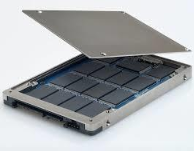
formado por discos mecánicos, sino por memorias de circuitos integrados para almacenar la información, utilizando tecnologías como la memoria flash, memoria SDRAM, etc. Al no tener piezas móviles, la unidad de estado sólido reduce drásticamente el tiempo de búsqueda y latencia, por lo que se ha convertido en una alternativa mucho más rápida que los discos duros.Al ser inmunes a las vibraciones externas, son especialmente aptas para vehículos, ordenadores portátiles y otros dispositivos móviles.
Las unidades de almacenamiento externos tenemos:
- Discos ópticos. La aparición de los discos ópticos (CD-ROM y DVD), provocó una revolución en los sistemas de almacenamiento, gracias a la enorme cantidad de información, de muy distinta naturaleza, que pueden almacenar con un coste relativamente bajo. Todos estos discos utilizan tecnología óptica (láser).
- CD-ROM (Compact Disk Real Only Memory): La información que contiene solo puede ser leída, por lo que se utiliza para almacenar información que no tenga que ser modificada; esta característica, unida a su gran capacidad (650, 700, 800 o incluso 900 Mb) y a que la información grabada en él puede ser de distinta naturaleza (sonido, vídeo, fotografías…), hacen del CD-ROM un soporte ideal para enciclopedias, juegos, software interactivo,…
La información de un CD-ROM está almacenada en una sola cara, siguiendo una pista única en forma de espiral que comienza en el centro del disco y termina en el borde exterior; esta pista está dividida en sectores.
Su superficie es de aluminio reflectante y está recubierta de un material plástico que la protege, alterna zonas lisas y muescas que representan a los dos dígitos binarios (1 y 0).
Para que el ordenador pueda leer la información, debe disponer de una unidad lectora de CD-ROM.
- DVD-ROM (Digital Video Disc): Son, físicamente, semejantes a los CD-ROM. pero su capacidad es mucho mayor (varios Gb, teóricamente hasta 17). Esta capacidad la consiguen aumentando la densidad de escritura (más información en el mismo espacio), aprovechando las dos caras del disco y almacenando, en cada una de ellas, información en varias capas superpuestas. A pesar de que la tecnología utilizada en estos discos es análoga a la de los CD-ROM, su láser es distinto. Este hecho hace que una misma unidad no pueda ser utilizada para leer ambos tipos de disco; aunque, en la práctica, la mayoría de los fabricantes incorporan en sus unidades lectoras de DVD un segundo láser que permite la lectura de CDROM.
- HD DVD Y Blue-ray: La evolución de los discos DVD ha traído dos nuevos discos ópticos, denominados Blue-ray y HD DVD, cuyo aspecto físico es análogo a sus predecesores pero con una capacidad de almacenamiento bastante superior. Aunque los dos están basados en la misma tecnología láser, hay diferencias técnicas entre ellos.
Ambos discos están concebidos para almacenar vídeos de alta definición y datos; en la actualidad se libra una guerra entre las casas comerciales que les apoyan para ver cuál de los formatos consigue imponerse en el mercado.
- Dispositivos periféricos
- Clasificación
Los dispositivos periféricos son aquellos que el usuario emplea para interactuar con el ordenador. Se clasifican en:
- Periféricos de entrada. Permiten que el usuario pueda interaccionar con el ordenador para introducir datos e instrucciones.
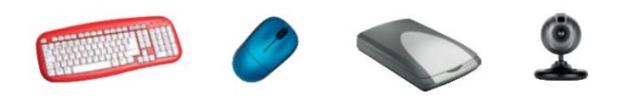
- Periféricos de salida. Sirven para obtener información del ordenador una vez que los datos han sido procesados por este.
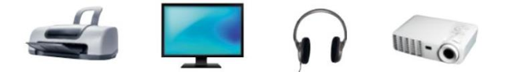
- Periféricos de almacenamiento. Se emplean para guardar información de forma permanente en soportes de almacenamiento come los discos o las memorias flash.
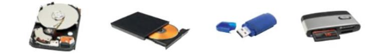
- Periféricos de comunicación. Se encargan de conectar dispositivos e intercambiar datos entre ellos. La conexión puede ser por cable a inalámbrica (wifi. Bluetooth, infrarrojos, etc)
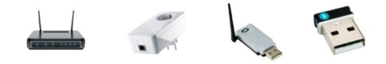
- Conectar un periférico al ordenador
Los periféricos se pueden conectar directamente a la place base, a través de un puerto o de una conexión inalámbrica.
Los ordenadores disponen de varios puertos para la conexión de dispositivos. Algunos de los más habituales son los siguientes:
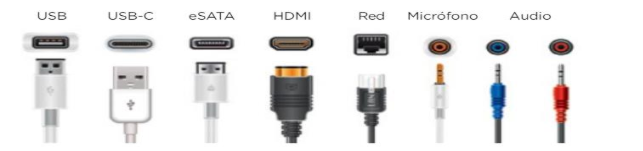
- Instalar el driver de un dispositivo.
Un driver o controlador es un software que ejerce como intermediario entre un dispositivo hardware y su sistema operativo. Los drivers son necesarios para que el equipo detecte los periféricos y estos funcionen correctamente.
Por lo general, la mayoría de los sistemas operativos instalan automáticamente los dispositivos hardware del mercado y la detección de los periféricos se lleva a cabo en el momento en el que estos son conectados.
En algunas ocasiones. el sistema operativo no reconoce un dispositivo. Esto se debe a que el sistema no dispone de su driver y hay que instalarlo. El driver y el software específico para la instalación de un dispositivo se pueden encontrar, por lo general, en el disco de instalación o en la web del fabricante.

- ¿Qué son los dispositivos móviles?
Cuando pensamos en dispositivos móviles, lo primero que nos viene a la cabeza es un teléfono móvil; sin embargo, en la actualidad, existen múltiples dispositivos en el mercado que encajan dentro de esta categoría, como ordenadores portátiles, netbooks, pocketPC, tabletas, etc.
Esta diversidad, en realidad, genera una importante problemática para quien debe programarlos, ya que cada dispositivo tiene sus propias características, distintas dimensiones de su pantalla, resoluciones diferentes y, técnicamente, sus componentes pueden ser muy dispares, como una memoria determinada, una capacidad de procesamiento mayor o menor, GPS, etc. Por último, pueden soportar sistemas operativos y unos entornos específicos.
Por lo general, las características esenciales de estos dispositivos son:
1 Son aparatos pequeños: la mayoría se pueden transportar en el bolsillo del propietario o en un pequeño bolso.
2 Tienen capacidad de procesamiento.
3 Tienen conexión permanente o intermitente a una red.
4 Tienen memoria (RAM, tarjetas MicroSD, flash, etc.).
5 Normalmente, se asocian al uso individual de una persona, tanto en posesión como en operación, la cual generalmente puede adaptarlos a su gusto.
6 Tienen una alta capacidad de interacción mediante la pantalla o el teclado.
- Características de los dispositivos móviles - Movilidad. La característica más evidente de un dispositivo móvil es, precisamente, que es móvil. Se entiende por movilidad la cualidad de un dispositivo para ser transportado o movido con frecuencia y facilidad. Por tanto, el concepto de movilidad es una característica básica. Los dispositivos móviles son aquéllos que son lo suficientemente pequeños como para ser transportados y utilizados durante su transporte. - Reducido tamaño. Se entiende por tamaño reducido la cualidad de un dispositivo móvil de ser fácilmente usado con una o dos manos sin necesidad de ninguna ayuda o soporte externo. El tamaño reducido también permite transportar el dispositivo cómodamente por parte de una persona. - Capacidad de comunicación inalámbrica. Otro concepto importante es el término inalámbrico. Por comunicación inalámbrica se entiende la capacidad que tiene un dispositivo de enviar o recibir datos sin la necesidad de un enlace cableado. Por lo tanto, un dispositivo inalámbrico es aquél capaz de comunicarse o de acceder a una red sin cables (por ejemplo, un teléfono móvil o una PDA). - Capacidad de interacción con las personas. Se entiende por interacción el proceso de uso que establece un usuario con un dispositivo. Entre otros factores, en el diseño de la interacción intervienen disciplinas como la usabilidad y la ergonomía. Como hemos podido comprobar, la diversidad de términos, definiciones y características asociadas a los dispositivos móviles aumenta y cambia cada día, lo cual es propio de las tecnologías que están en continua evolución y desarrollo.
- Interior de un teléfono móvil
En su interior no varían mucho los distintos dispositivos móviles, pero, como indica el
título, nos enfocaremos en el hardware de los teléfonos Smartphone, que básicamente están estructurados por las siguientes piezas:

1.- Cámara trasera y flash. En sí mismo es un dispositivo independiente. El flash, en los mejores modelos, cuenta con dos LED, uno cálido y otro frío.
2.- Antena. Elemento que recibe las señales eléctricas de la red celular y las manda al módem para transformarlas en voz y datos.
3.- Conexiones. Zona donde se conectan los buses de datos de elementos del dispositivo para ser controlados por la placa base y el procesador.
4.- Cámara frontal. La cámara selfi por definición. Suele ser de menor resolución que la principal y con un objetivo de mayor cobertura.
5.- Procesador+ RAM. Conocido como el cerebro del sistema, es un microchip similar al de los ordenadores. La memoria RAM almacena los datos.
6.- Módem. Establece la comunicación con la red celular, es la parte que hace el trabajo como teléfono en el smartphone. También es responsable de la conexión de datos.
7.- Botones. Pese a que la mayoría de los smartphones son táctiles, algunos resisten aún. Sus funciones suelen ser de encendido, apagado...
8.- Giroscopio y acelerómetro. Estos sensores detectan el movimiento en los tres ejes, así como la magnitud de ese movimiento.
9.- SIM. La bandeja para la SIM es uno de los elementos que igual desaparecen con la implantación de la SIM virtual.
10.- Altavoz. Miniaturizar un altavoz manteniendo su calidad es siempre difícil, por eso los móviles no suelen sonar demasiado bien.
11.- Conexión y 'jack'. Sirve para recargar la batería y funciona como conexión de datos. El jack sirve de salida para conectar unos auriculares.
12.- Micrófono. Existen móviles que usan hasta tres micrófonos para obtener mayor fidelidad del sonido en conversaciones o vídeos.
13.- Motor háptico. Permite conocer el nivel de presión que se aplica sobre la pantalla y actuar de manera diferente en consecuencia.
14.- Batería. El almacén de energía eléctrica que alimenta los circuitos y la pantalla del smartphone. Suelen ser de iones de litio.
15.- Escáner dactilar. Es un elemento de seguridad que permite reconocer la huella y solo da acceso si coincide con alguna de las autorizadas.
16.- Pantalla. Es el elemento más visible del equipo, y su tamaño, entre las 4 y 5,4 pulgadas, y calidad definen la sensación global del conjunto.
Podemos clasificar estas partes como: Cerebro, Antenas y Accesorios.
El Cerebro:
La Placa Base es el circuito integrado que contiene el cerebro y todos los componentes electrónicos.
Las Antenas:
Se encargan de la recepción y el envío de los diferentes tipos de señales:
- Antena: del dispositivo móvil.
- Antena WiFi: del estándar 802.11 a, b, g y n.
- Antena NFC: del dispositivo móvil a otros dispositivos en distancias cortas.
- Pantalla y teclado:
- Pantalla: Es el interfaz entre el dispositivo y su usuario. La mayoría son táctiles y están hechas de cristal líquido LCD.
- Teclado: Permite ingresar información al dispositivo. El formato más usado es el teclado QWERTY
Accesorios:
- Micrófono: Traduce la voz del usuario en energía eléctrica, para que ésta pueda ser enviada del dispositivo a su destino.
- Altavoz: reproduce los sonidos del dispositivo.
- Batería: Almacena y mantiene la energía que el dispositivo necesita para funcionar.
- Puerto de carga de energía: Permite recargar la batería del aparato.
Hablemos con un poco más de profundidad de algunos de los componentes:
SoC / Procesador
El procesador es el núcleo de todo sistema inteligente y una de las características técnicas más importantes. Es un chip que se encarga de procesar toda la información del sistema y las aplicaciones. Los procesadores móviles son algo más complejos que los que puede tener un ordenador, y se conocen comúnmente como SoC (System on a Chip). En el SoC se encuentra el procesador principal, pero también el resto de los elementos, siendo los más importantes:
- Procesador gráfico (GPU): principal responsable de las tareas con demanda gráfica, siendo los videojuegos la principal herramienta.
- Unidad neuronal (NPU): encargado de procesar con mayor velocidad tareas de inteligencia artificial.
- Procesador de imagen (ISP): encargado de procesar la información de la cámara.
- Modem: Encargado de la conectividad inalámbrica. Normalmente viene integrado en el SoC, pero a veces se encuentra fuera de este.
Todas estas características vienen empaquetadas en un mismo conjunto, que suele estar representado por un nombre. Por ejemplo, un Snapdragon 865 tiene un conjunto único de todas estas características, mientras que un chip de menor gama puede tener, por ejemplo, el mismo procesador, pero peores gráficos, módem o ISP.
Tener el mejor SoC posible va a mejorar la experiencia de uso global de tu móvil al ser una de las características técnicas más importantes. No solo será más rápido, sino que además garantizará una mejor durabilidad en el tiempo.
Memoria RAM
La memoria RAM es la encargada de almacenar la información del sistema, aplicaciones y juegos que se encuentren en ejecución. Estas aplicaciones pueden estar en primer plano cuando es la aplicación que estás utilizando en el momento que interactuas con tu móvil o en segundo plano, como cuando una aplicación está descargando archivos mientras navegas por internet, cuando Google Fotos hace una copia de tus imágenes mientras estás en WhatsApp.
El uso de la memoria en segundo plano ayuda también a la multitarea, permitiendo que usemos varias aplicaciones de forma simultánea, así como permitir que cuando abramos una aplicación que hayamos minimizado se abra inmediatamente sin tener que volver a cargar.
Cuantas más aplicaciones activas en segundo plano tengamos, mayor será el consumo de la batería y es por ello, que se diseñan técnicas de gestión de la energía para buscar el equilibrio óptimo entre rendimiento y autonomía.
Almacenamiento interno
El almacenamiento para los datos de nuestro dispositivo:
- El software preinstalado por el fabricante (aplicaciones y sistema operativo) ocupa espacio.
- La información de las aplicaciones, juegos, contenidos multimedia como música, fotografías, vídeo, documentos, correos, conversaciones. Todo lo que se encuentre físicamente contigo y no en internet estará en el almacenamiento.
64 GB es lo mínimo para que puedas tener una experiencia sin muchas preocupaciones. Con 128 GB deberías tener una gran experiencia de uso.
También podemos ampliar la capacidad hasta los 256 GB con tarjetas microSD.
Pantalla
Cada dispositivo móvil una tiene su propio tamaño, con una resolución, tecnología de panel y otras características.
- Tamaño: Normalmente viene representado por pulgadas y la cifra indica la longitud de la diagonal de la pantalla. A más pulgadas, mayor pantalla.
- Relación de aspecto: Esta característica indica la relación entre el alto y el ancho de la pantalla. Una relación de aspecto clásica suele ser 16:9, indicando que por cada 16 centímetros de alto habrá 9 de ancho. La relación es una medida proporcional y en cada año que pasa los móviles cuentan con relaciones de aspecto más desiguales.
A destacar la tecnología OLED.
Cámaras
La fotografía es otro de los aspectos clave en la experiencia de un smartphone. Los fabricantes suelen añadir más y más cámaras, del mismo modo que aumentan los megapíxeles. Si bien es posible que un móvil con muchos megapíxeles y varias cámaras termine haciendo buenas fotografías, no existe una relación directa entre la calidad y estas cifras.Es importante considerar que el principal responsable de la calidad fotográfica suele ser el software.
Los megapíxeles son una medida de resolución. A mayor número de megapíxeles la imagen tendrá mayor información, pero al estar limitada al tamaño físico del sensor, dicha información será de peor calidad. Es habitual que cámaras de 48 megapíxeles finalmente produzcan fotografías de 12, uniendo 4 píxeles de menor calidad en uno con información más precisa.
Respecto al número de cámaras, la suma de cámaras no supone un incremento en la calidad final, sino una mayor versatilidad a la hora de hacer distintos tipos de fotografías.
Batería
La batería es la que define la capacidad que tendrá el móvil para funcionar sin necesidad de conectarlo al enchufe. La batería suele tener una capacidad, medida en miliamperios / hora, o mAh. Aquí existe una relación directa entre la duración de la autonomía y la carga, y es que, a mayor capacidad, más podremos utilizar nuestro móvil.
Es importante considerar que, aunque los mAh son la mejor forma para estimar la duración de batería de un móvil, dos móviles con una misma capacidad pueden tener autonomías distintas, dependiendo del consumo energético de los componentes y de la gestión del sistema operativo de las aplicaciones en segundo plano. Incluso dos personas con exactamente el mismo móvil es normal que no tengan la misma autonomía, ya que las aplicaciones más intensas (juegos, GPS o videollamadas) consumen más energía que las básicas.
Carga de la batería
Otro aspecto muy importante es la tecnología de carga rápida, cuya velocidad de carga suele estar medida en Wattios, o W. A mayor número de W, menos tiempo tardará en cargar una batería. Del mismo modo, una batería con más mAh requerirá mayor tiempo de carga. Página 28 de 28